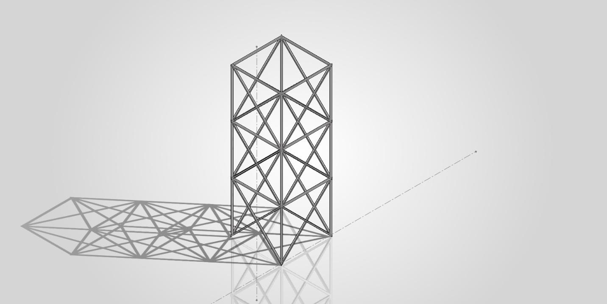
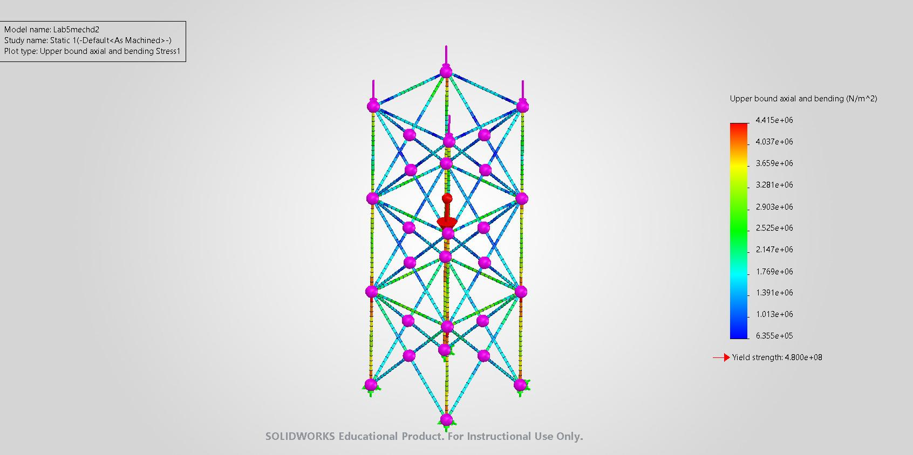
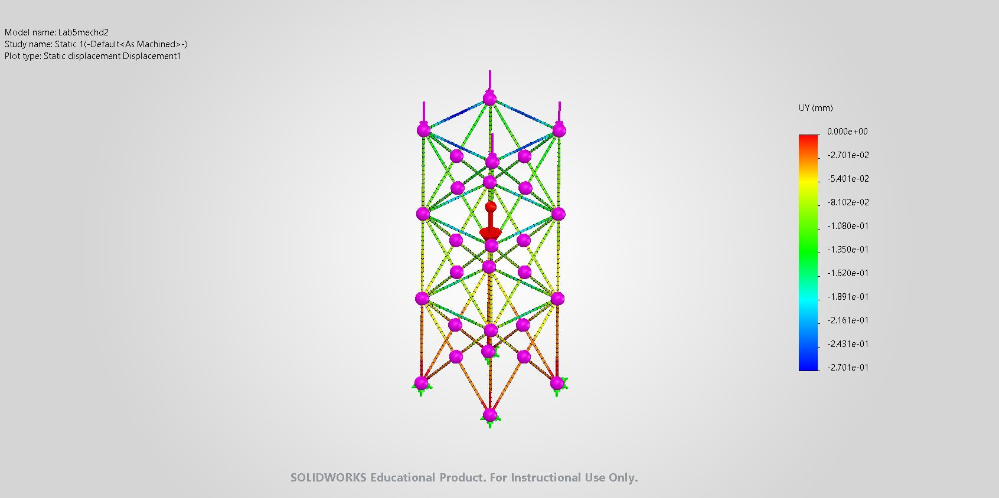

Structural Frame Design & Finite Element Analysis
For this project I designed a free-standing steel frame to support a 1000-L water tank at a height of 9 m, then analyzed it in SolidWorks to check that it wouldn't yield and that its deflection stayed within an acceptable limit. The frame uses the same square tubing cross-section throughout so the structure is simple to build and analyze.
Structural Design

The frame supports the tank at a height of 9 m using 76×76×2 mm square steel tubing for every member, so the same cross-sectional shape is used throughout the structure. It has four main vertical legs, horizontal members at several levels, and diagonal cross-bracing on the sides to improve stability and reduce side-to-side movement. Additional members were added at the top to support the tank and distribute its weight across the frame.
Simulation Setup

- Static frame analysis, with all members modeled using the 76×76×2 mm square tube cross-section.
- The four bottom support joints were restrained to represent the frame's attachment to the concrete foundation pad.
- All structural members were modeled with rigid beam connections to represent the welded joints.
- The load from the full water tank and a maintenance person was applied at the top support joints.
- Gravity was applied vertically downward at 9.81 m/s² so the frame's self-weight is included in the analysis.
- Material: linear elastic isotropic alloy steel (yield strength 480 MPa).
Engineering Analysis & Results

| Quantity | Value |
|---|---|
| Maximum stress | ≈ 4.415 MPa |
| Yield strength (alloy steel) | 480 MPa |
| Resulting safety factor | ≈ 108.7 |

| Quantity | Value |
|---|---|
| Maximum vertical displacement | 0.2701 mm |
| Allowable displacement (L/240) | 12.5 mm |
| Displacement-to-length ratio | 0.009% |
Engineering Verification
Safety factor against yielding, based on the maximum simulated stress:
Allowable vertical deflection, using the L/240 criterion applied to the 3 m story height between frame levels:
Comparing the simulated displacement to that limit:
Engineering Considerations
Diagonal cross-bracing was added on each face of the frame to limit side-to-side movement and give the structure more than one load path between the top supports and the foundation. Horizontal members at several levels tie the four legs together and help spread the tank and maintenance loads across more of the structure rather than concentrating them in the legs alone.
Gravity was included in the model so the frame's own self-weight is accounted for alongside the tank and maintenance-person loads, rather than analyzing the applied loads in isolation. The bottom joints were modeled as fixed restraints to represent the frame bolted or anchored to a concrete pad, and all joints were modeled as rigid connections to reflect that the frame is welded rather than bolted or pinned.
Both stress and displacement were checked because passing one doesn't guarantee the other: a frame can be well within yield and still deflect more than is acceptable for the tank and its supports, so both the safety factor and the L/240 deflection limit were evaluated before treating the design as acceptable.
These results come from a SolidWorks static simulation completed as coursework for a Mechanical Design course. They reflect the modeled assumptions described above and are not a certified or independently validated structural analysis.